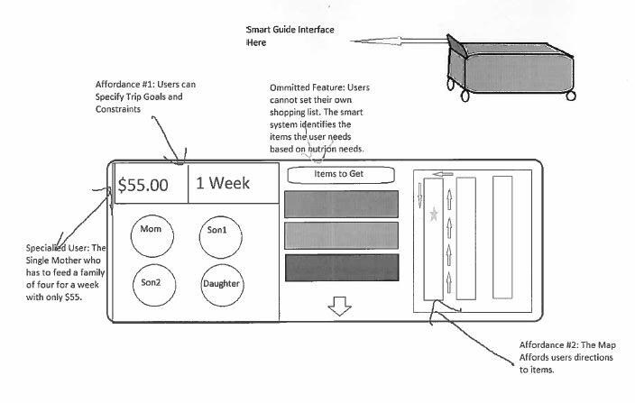

September 14, 2014
Effectively shopping for groceries remains difficult. Grocery stores are set up to encourage impulse buying and confuse the shopper, and planning meals can be a daunting task. Shoppers could use a way to help choose nutritional foods, stay within budget, and/or navigate the grocery store.
Traditionally, grocery stores have been organized to the benefit of store owners, often to the detriment of shoppers. We’ll make it easier for the shopper to control their own shopping experience, by giving them at-their-fingertips knowledge about the layout and contents of the store, and assistance in matching products to their needs.
One preliminary idea is to have an app that allows a family to set their budget and meal requirements, then constructs a shopping list for them and directs them through the grocery store to find each item. This idea is shown in the sketch below.
This is just one approach, however. To make the best design decisions, we need to figure out how our users shop. Do they have a certain pattern? Can they easily find all items? Do they avoid certain aisles? Do they manage their budget well? Would they rather have an app that would plan their meals for them, or manage their shopping once they are already at the store? We can meet our users by going to the grocery store and asking the shoppers questions, and observing them.
To successfully answer these questions we need to effectively work together. Our team contract delineates the manner in which we will interact.